9ª edizione · 2024
Torni-amo il legno 2024
Domenica 13 ottobre 2024, presso il salone delle feste del bocciodromo comunale di Pont-Saint-Martin, si è svolta la nona edizione del concorso.
Domenica 13 ottobre 2024, presso il salone delle feste del bocciodromo comunale di Pont-Saint-Martin, si è svolta la nona edizione del concorso.
Domenica 13 ottobre 2024 la nona edizione di “Torni-amo il legno” ha accolto partecipanti e visitatori nel salone delle feste del bocciodromo comunale di Pont-Saint-Martin. La partecipazione era gratuita e aperta agli appassionati, con l’intento di rendere il concorso un’occasione accessibile per incontrarsi e conoscere più da vicino il mondo della tornitura.
Le opere sono rimaste esposte dalle 10 alle 17 e, durante la giornata, il pubblico ha potuto seguire le dimostrazioni e incontrare le ditte specializzate presenti. L’edizione ha confermato le quattro categorie Tornitura, Artistico, Penne e Trottole, offrendo una raccolta molto varia di forme, tecniche e interpretazioni.
La premiazione finale ha concluso la giornata valorizzando l’impegno dei concorrenti. L’album fotografico e i primi cinque classificati di ogni categoria permettono oggi di ripercorrere l’esposizione e conservare il ricordo di questa edizione.
Una selezione di 30 fotografie dell’esposizione e delle quattro categorie in concorso. Apri un’immagine e usa le frecce per scorrere l’album.
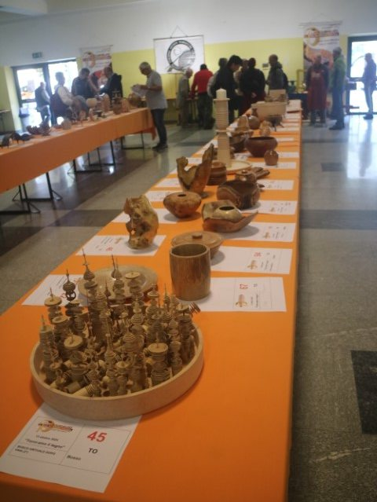
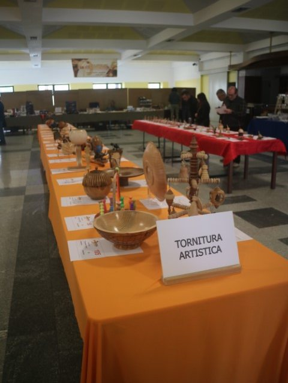
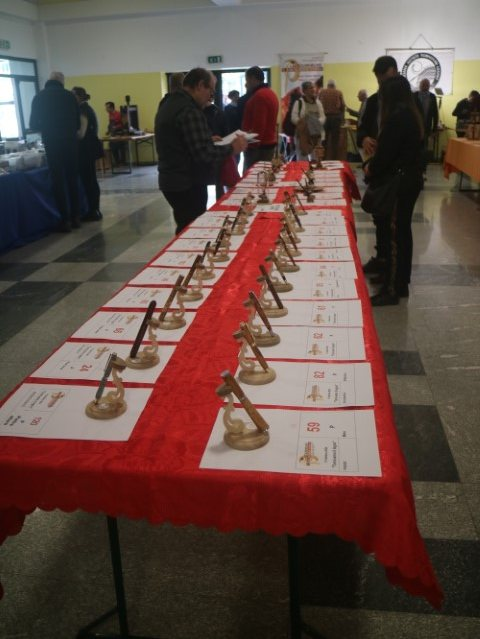
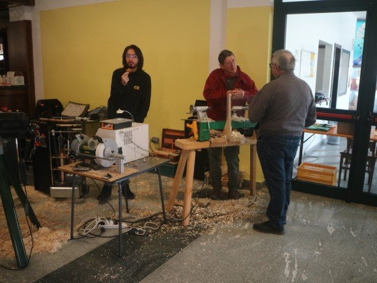
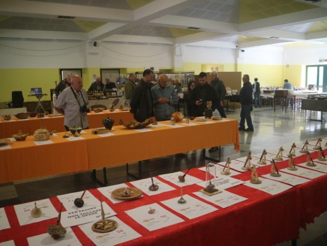
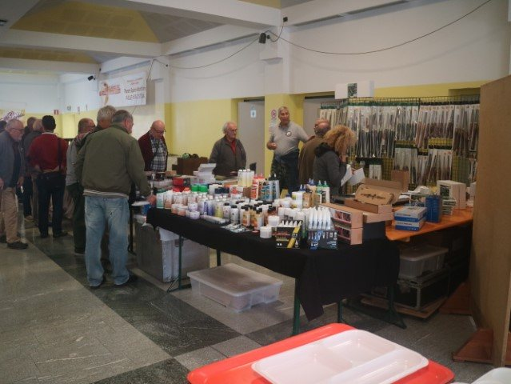
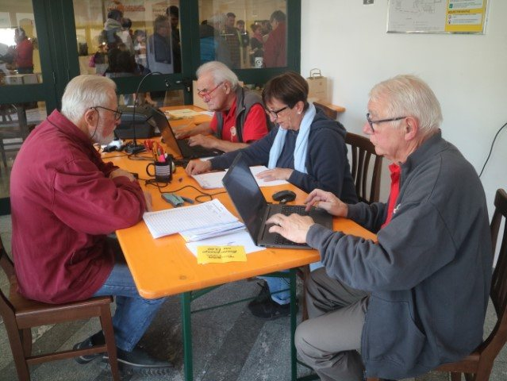
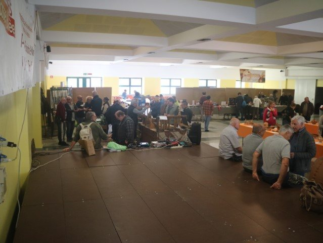
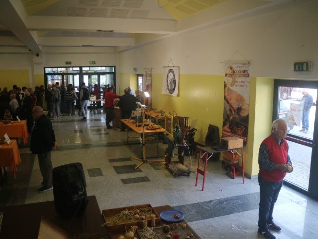
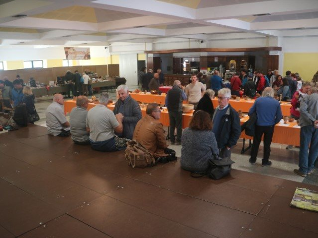
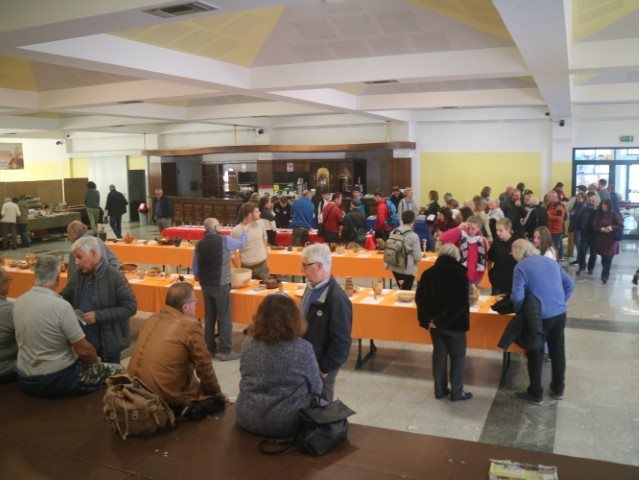
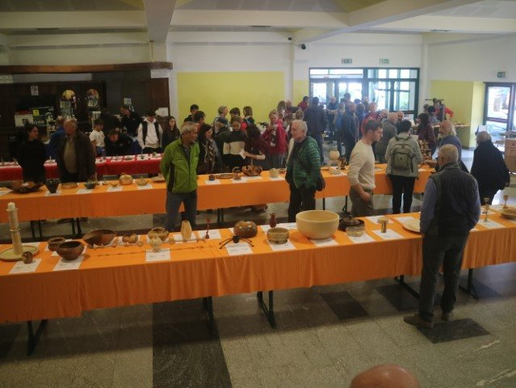
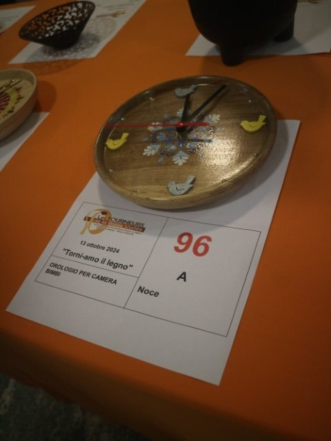
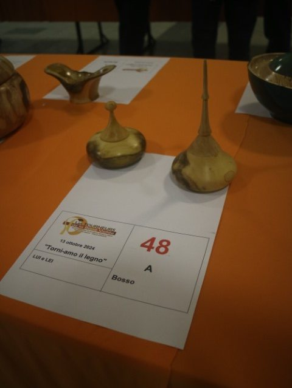
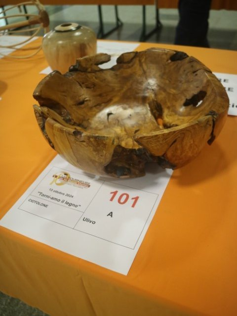
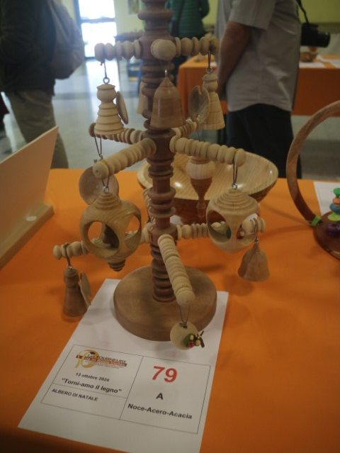
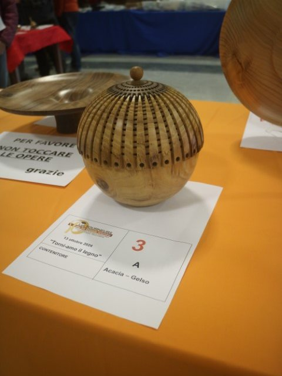
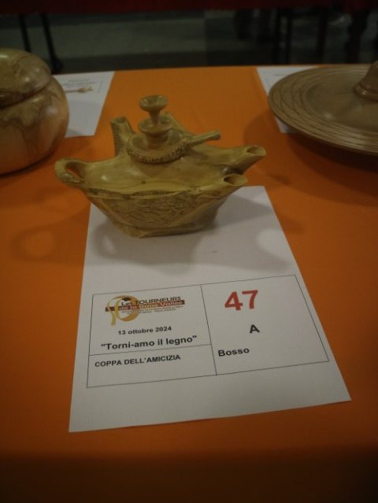
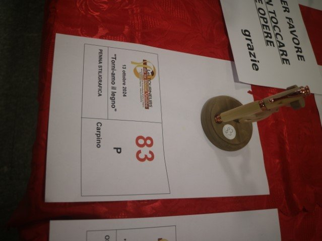
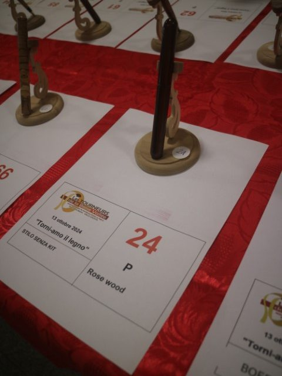
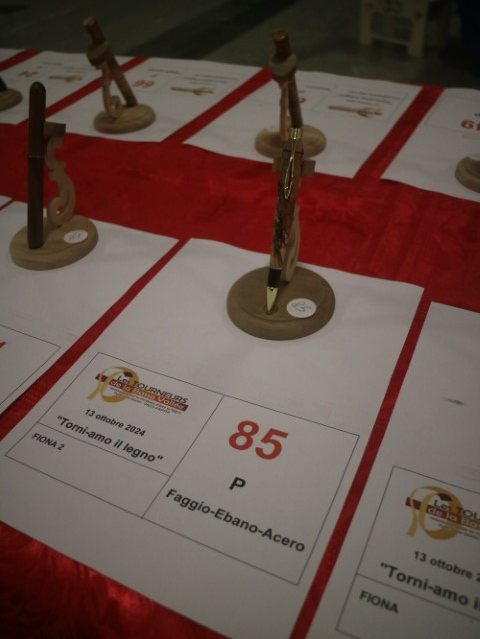
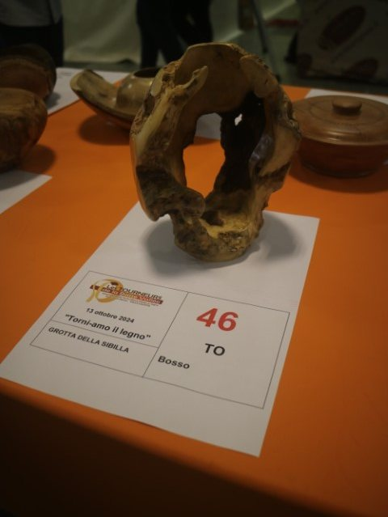
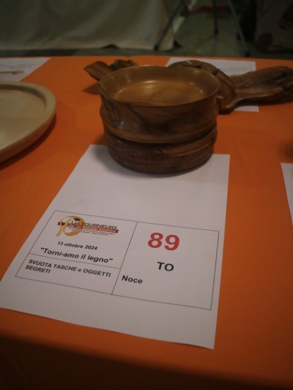
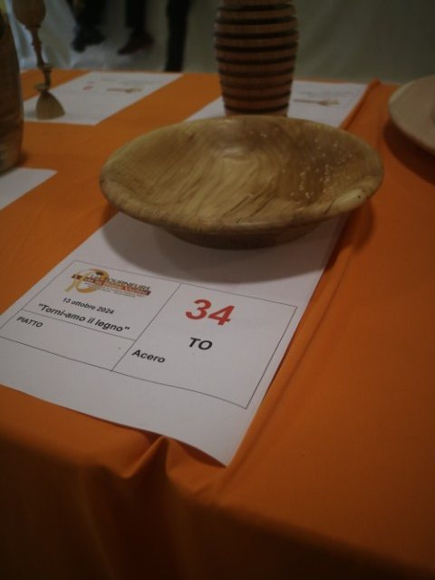
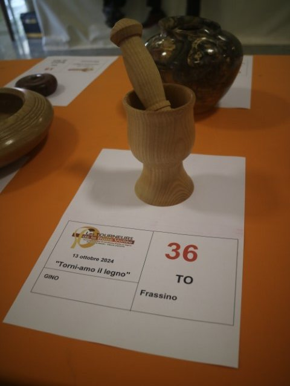
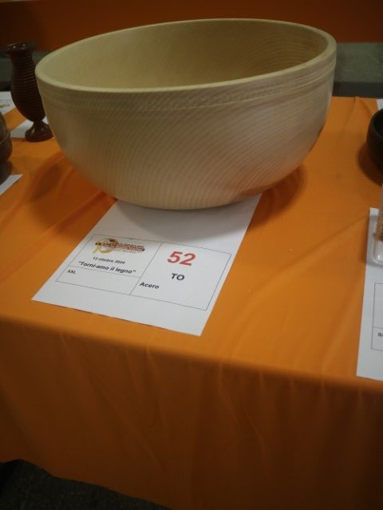
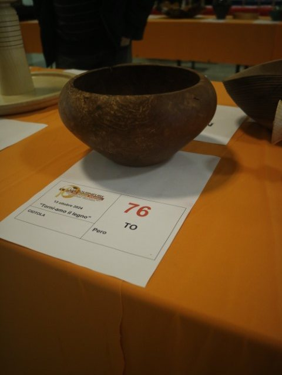
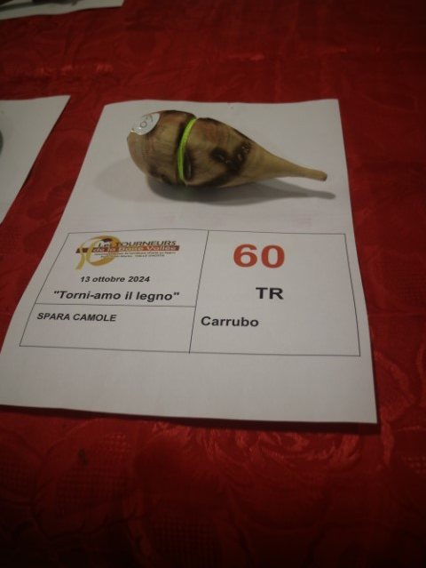
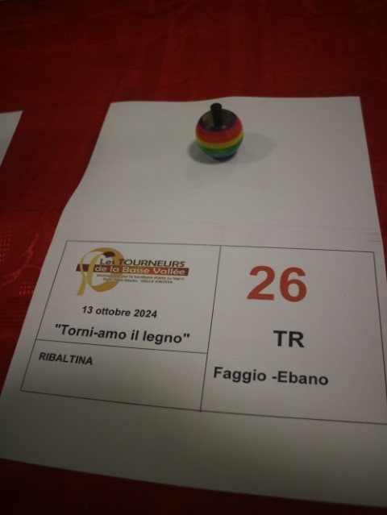
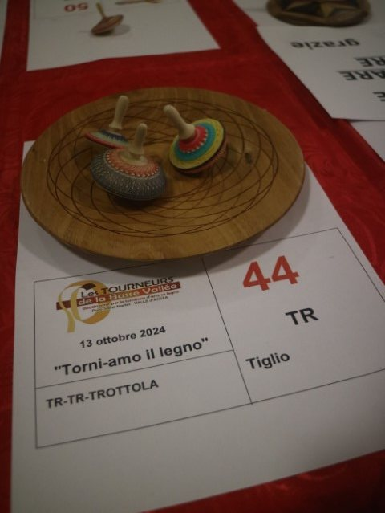
Le prime cinque opere della classifica ufficiale di ogni categoria.